Code
dat <- read_csv("data/EcoDrought_FlowTempData_formatted.csv")Purpose: fit hierarchical stream temp model to all EcoDrought data. Estimate random betas as functions of catchment covariates (elevation), hierarchically by basin.
Notes:
Set flow = NA to 0. Probably should change this to latent variable in model, especially when expanding to sites where flow data is more rare
dat <- read_csv("data/EcoDrought_FlowTempData_formatted.csv")View basins and sites
DT::datatable(dat %>% group_by(basin, site_name, site_code) %>% summarise(n = n()) )How much missing data? Need to put a prior on flow
sum(is.na(dat$z_air_temp_mean))[1] 0sum(is.na(dat$z_air_temp_mean_lag1))[1] 0sum(is.na(dat$z_air_temp_mean_lag2))[1] 0sum(is.na(dat$z_Yield_mm_log))[1] 4290dat %>% filter(basin == "West Brook") %>% ggplot(aes(x = z_air_temp_mean, y = z_Yield_mm_log, colour = tempc_mean)) + geom_point(size = 0.2) + facet_wrap(~site_name) + theme_bw() + ggpubr::stat_cor()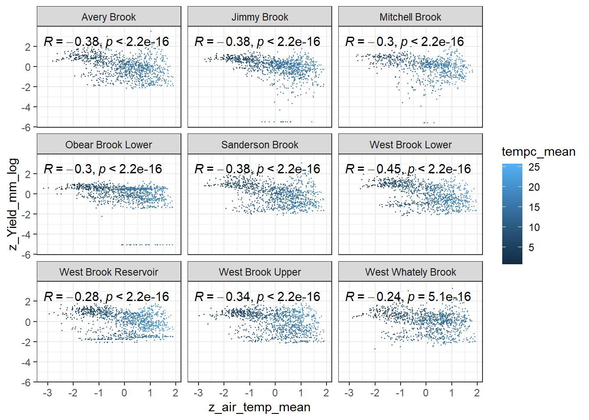
dat %>% filter(basin == "Staunton River") %>% ggplot(aes(x = z_air_temp_mean, y = z_Yield_mm_log, colour = tempc_mean)) + geom_point(size = 0.2) + facet_wrap(~site_name) + theme_bw() + ggpubr::stat_cor()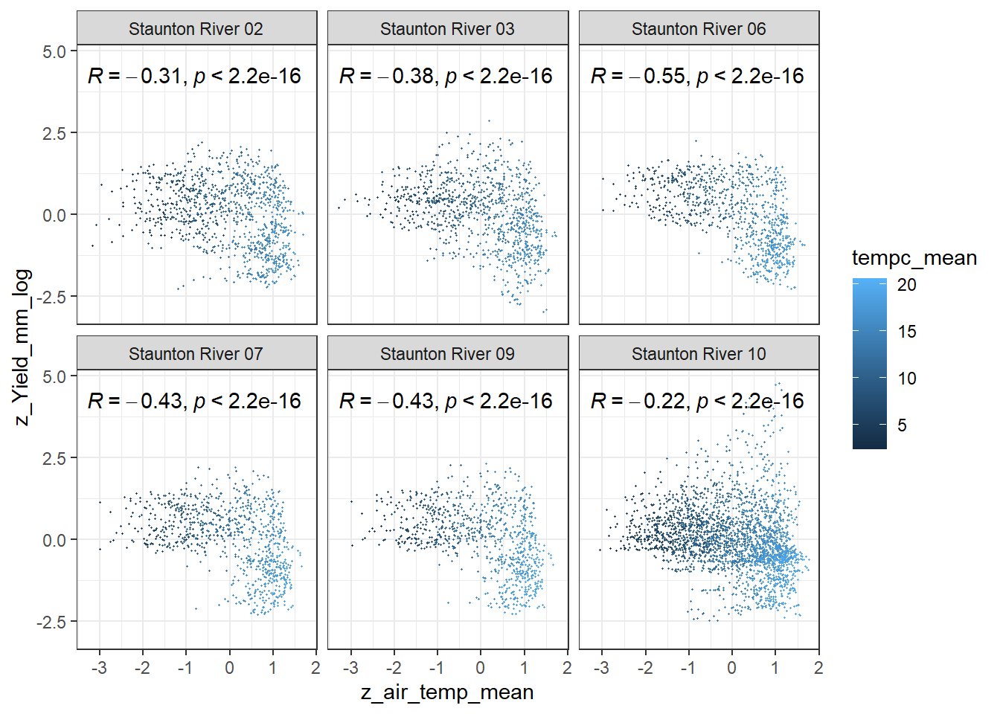
dat %>% filter(basin == "Paine Run") %>% ggplot(aes(x = z_air_temp_mean, y = z_Yield_mm_log, colour = tempc_mean)) + geom_point(size = 0.2) + facet_wrap(~site_name) + theme_bw() + ggpubr::stat_cor()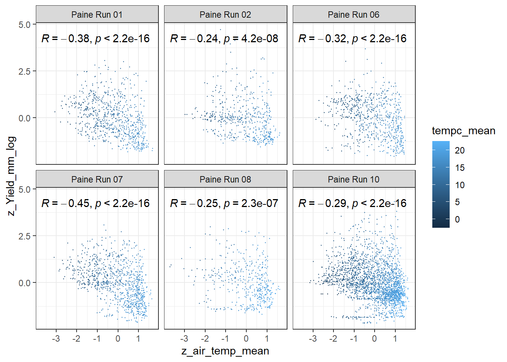
dat %>% filter(basin == "Flathead") %>% ggplot(aes(x = z_air_temp_mean, y = z_Yield_mm_log, colour = tempc_mean)) + geom_point(size = 0.2) + facet_wrap(~site_name) + theme_bw() + ggpubr::stat_cor()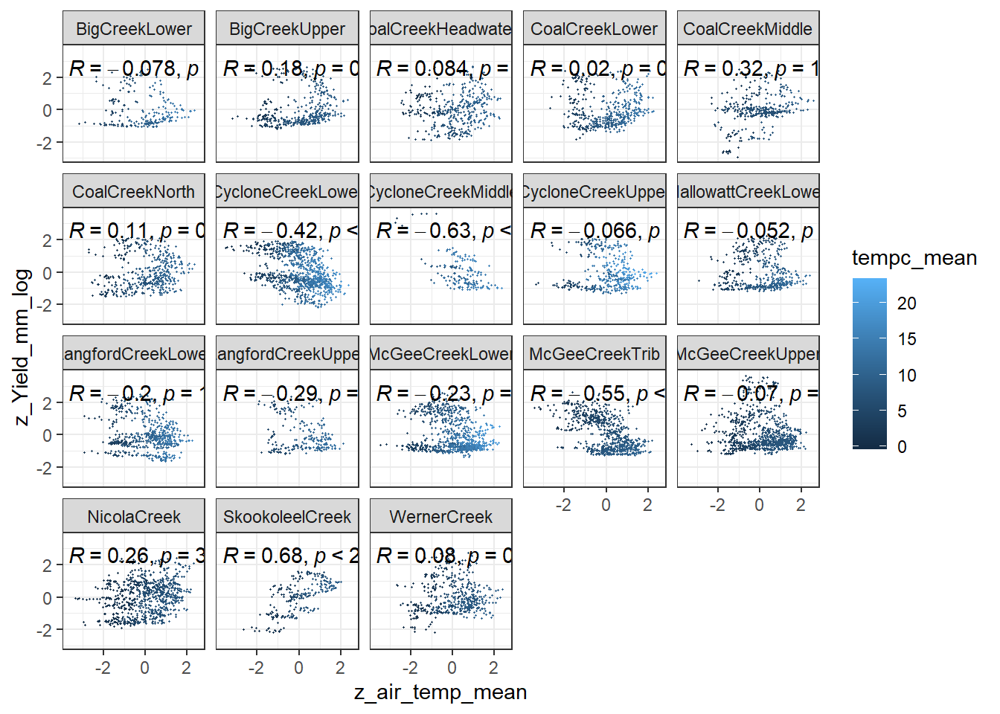
dat %>% filter(basin == "Yellowstone") %>% ggplot(aes(x = z_air_temp_mean, y = z_Yield_mm_log, colour = tempc_mean)) + geom_point(size = 0.2) + facet_wrap(~site_name) + theme_bw() + ggpubr::stat_cor()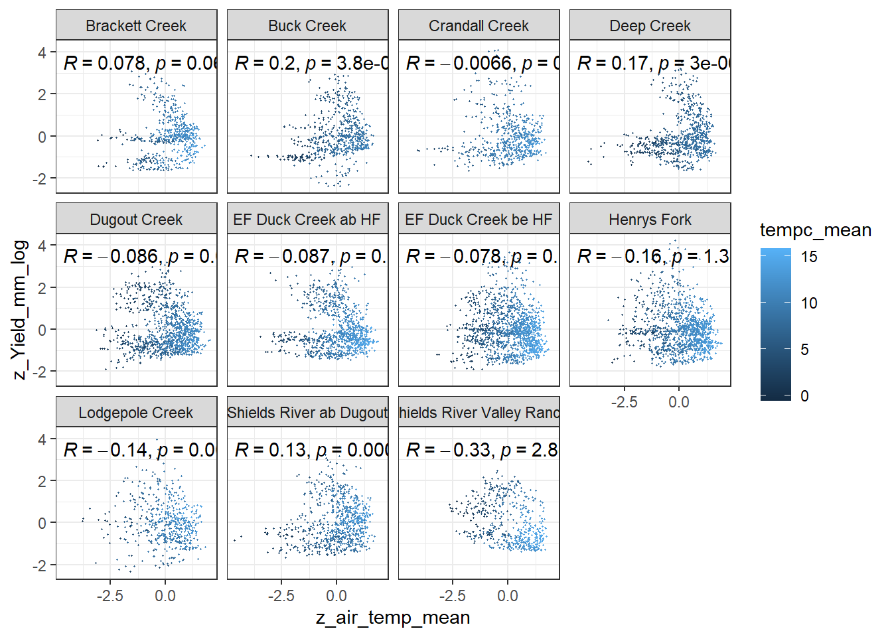
dat %>% filter(basin == "Snake River") %>% ggplot(aes(x = z_air_temp_mean, y = z_Yield_mm_log, colour = tempc_mean)) + geom_point(size = 0.2) + facet_wrap(~site_name) + theme_bw() + ggpubr::stat_cor()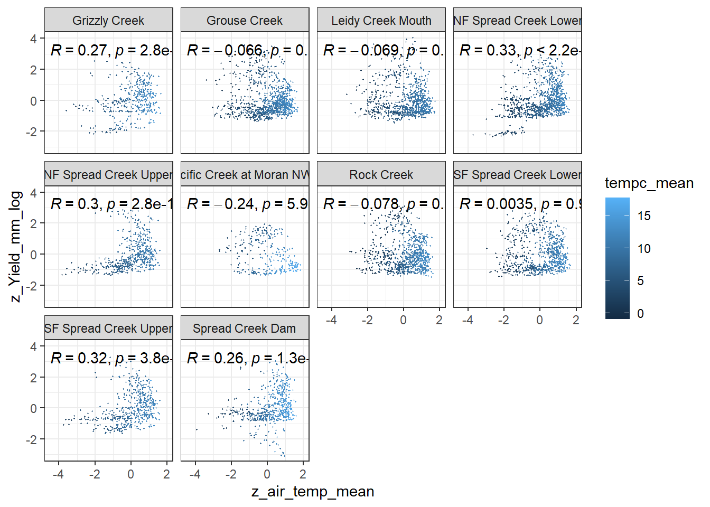
dat %>% filter(basin == "Donner Blitzen") %>% ggplot(aes(x = z_air_temp_mean, y = z_Yield_mm_log, colour = tempc_mean)) + geom_point(size = 0.2) + facet_wrap(~site_name) + theme_bw() + ggpubr::stat_cor()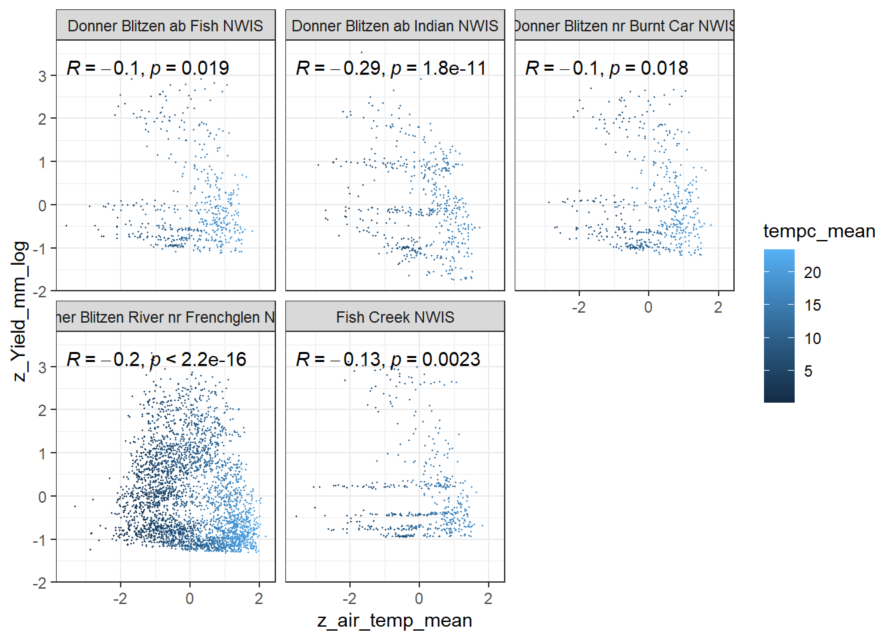
dat %>% filter(basin == "West Brook") %>% ggplot(aes(x = z_air_temp_mean, y = tempc_mean, color = z_Yield_mm_log)) + geom_point(size = 0.2) + facet_wrap(~site_name) + theme_bw()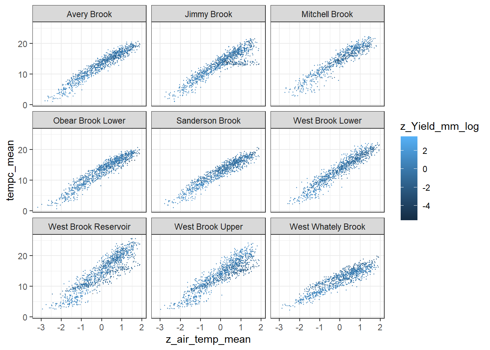
dat %>% filter(basin == "Staunton River") %>% ggplot(aes(x = z_air_temp_mean, y = tempc_mean, color = z_Yield_mm_log)) + geom_point(size = 0.2) + facet_wrap(~site_name) + theme_bw()
dat %>% filter(basin == "Paine Run") %>% ggplot(aes(x = z_air_temp_mean, y = tempc_mean, color = z_Yield_mm_log)) + geom_point(size = 0.2) + facet_wrap(~site_name) + theme_bw()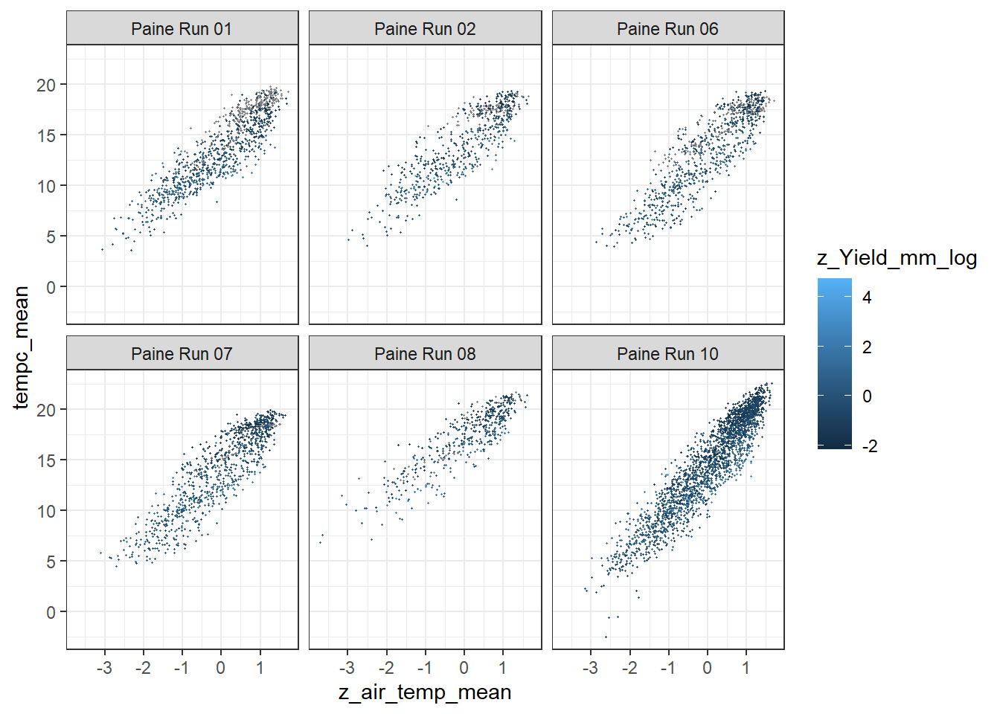
dat %>% filter(basin == "Flathead") %>% ggplot(aes(x = z_air_temp_mean, y = tempc_mean, color = z_Yield_mm_log)) + geom_point(size = 0.2) + facet_wrap(~site_name) + theme_bw()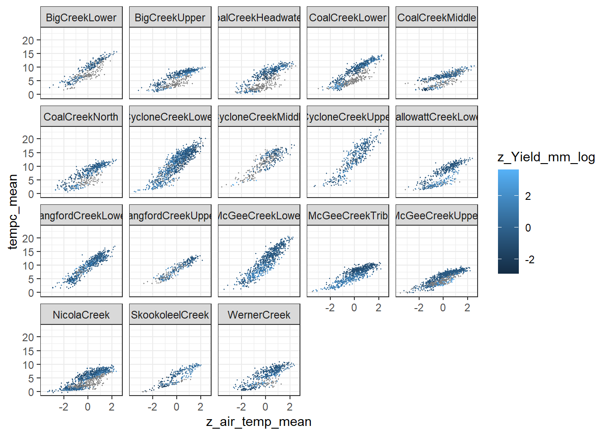
dat %>% filter(basin == "Yellowstone") %>% ggplot(aes(x = z_air_temp_mean, y = tempc_mean, color = z_Yield_mm_log)) + geom_point(size = 0.2) + facet_wrap(~site_name) + theme_bw()
dat %>% filter(basin == "Snake River") %>% ggplot(aes(x = z_air_temp_mean, y = tempc_mean, color = z_Yield_mm_log)) + geom_point(size = 0.2) + facet_wrap(~site_name) + theme_bw()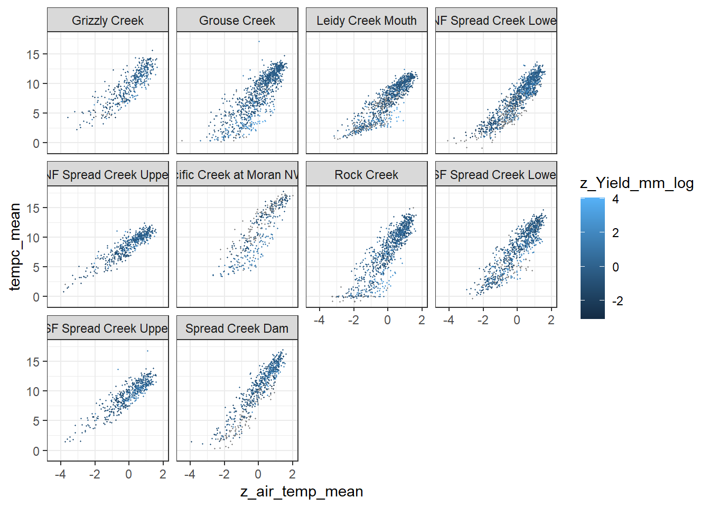
dat %>% filter(basin == "Donner Blitzen") %>% ggplot(aes(x = z_air_temp_mean, y = tempc_mean, color = z_Yield_mm_log)) + geom_point(size = 0.2) + facet_wrap(~site_name) + theme_bw()
ggpairs(dat %>% select(yday, z_air_temp_mean, z_Yield_mm_log))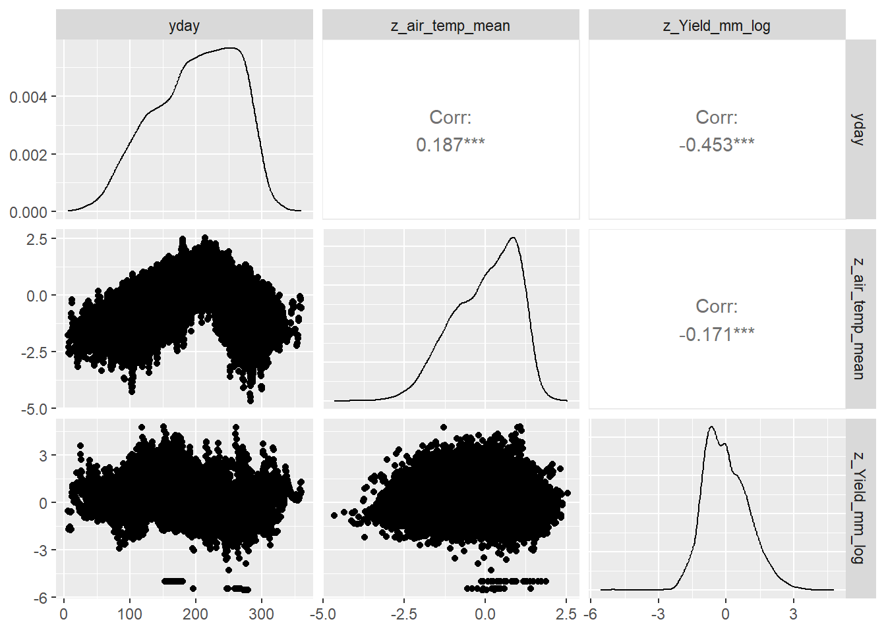
Specify hierarchical model following Letcher et al. (2016). MODIFIED:
cat("model {
###----------------- LIKELIHOOD -----------------###
# Days without an observation on the previous day (first observation in a series)
# No autoregressive term
for (i in 1:nFirstObsRows){
temp[firstObsRows[i]] ~ dnorm(stream.mu[firstObsRows[i]], pow(sigma, -2))
stream.mu[firstObsRows[i]] <- trend[firstObsRows[i]]
trend[firstObsRows[i]] <- inprod(B.site[site[firstObsRows[i]], ], X.site[firstObsRows[i], ])
}
# Days with an observation on the previous dat (all days following the first day)
# Includes autoregressive term (ar1)
for (i in 1:nEvalRows){
temp[evalRows[i]] ~ dnorm(stream.mu[evalRows[i]], pow(sigma, -2))
stream.mu[evalRows[i]] <- trend[evalRows[i]] + ar1[site[evalRows[i]]] * (temp[evalRows[i]-1] - trend[ evalRows[i]-1 ])
trend[evalRows[i]] <- inprod(B.site[site[evalRows[i]], ], X.site[evalRows[i], ])
}
# Prior on covariates to handle missing (flow) data
for (i in 1:n){
for (k in 1:Krandom) {
X.site[i,k] ~ dnorm(0, pow(1, -2))
}
}
# Save log-likelihoods for LOO-CV
for (i in 1:n) {
loglik[i] <- logdensity.norm(temp[i], stream.mu[i], pow(sigma, -2))
}
###----------------- PRIORS ---------------------###
# ar1, hierarchical by site
for (i in 1:nsites){
ar1[i] ~ dnorm(ar1Mean, pow(ar1SD, -2)) T(-1,1)
}
ar1Mean ~ dunif(-1, 1)
ar1SD ~ dunif(0, 2)
# model variance
sigma ~ dunif(0, 100)
# random effect coefficients (by site with covariate effects, hierarchical by basin)
for (k in 1:Krandom) {
# site level regressions
for (i in 1:nsites) {
B.site[i,k] ~ dnorm(mu.B.site[i,k], pow(sigma.B.site[k], -2))
mu.B.site[i,k] <- alpha.0[basin[i],k] + alpha.1[basin[i],k] * elev[i] #+ alpha.2[basin[i],k] * area[i] + alpha.3[basin[i],k] * elev[i] * area[i]
}
# basin level variation in elevation effects
for (j in 1:nbasins) {
alpha.0[j,k] ~ dnorm(mu.alpha.0[k], pow(sigma.alpha.0[k], -2))
alpha.1[j,k] ~ dnorm(mu.alpha.1[k], pow(sigma.alpha.1[k], -2))
# alpha.2[j,k] ~ dnorm(mu.alpha.2[k], pow(sigma.alpha.2[k], -2))
# alpha.3[j,k] ~ dnorm(mu.alpha.3[k], pow(sigma.alpha.3[k], -2))
}
# hyperpriors: global means and standard deviations
mu.alpha.0[k] ~ dnorm(0, pow(10, -2))
mu.alpha.1[k] ~ dnorm(0, pow(10, -2))
# mu.alpha.2[k] ~ dnorm(0, pow(10, -2))
# mu.alpha.3[k] ~ dnorm(0, pow(10, -2))
sigma.B.site[k] ~ dunif(0, 100)
sigma.alpha.0[k] ~ dunif(0, 100)
sigma.alpha.1[k] ~ dunif(0, 100)
# sigma.alpha.2[k] ~ dunif(0, 100)
# sigma.alpha.3[k] ~ dunif(0, 100)
}
###----------------- DERIVED VALUES -------------###
for (i in 1:n) {
residuals[i] <- temp[i] - stream.mu[i]
}
# variance of model predictions (fixed + random effects)
var_fit <- (sd(stream.mu))^2
# residual variance
var_res <- (sd(residuals))^2
# calculate Bayesian R^2
R2 <- var_fit / (var_fit + var_res)
# Root mean squared error
rmse <- sqrt(mean(residuals[]^2))
}", file = "JAGS models/DailyTempModelJAGS_Letcher_hierarchical_modified_site-basin.txt")Get first observation indices and check that nFirstRowObs equals the number of unique site-years: must be TRUE!
# row indices for first observation in each site-year
firstObsRows <- unlist(dat %>%
group_by(siteYear) %>%
summarize(index = rowNum[min(which(!is.na(tempc_mean)))]) %>%
ungroup() %>%
select(index))
nFirstObsRows <- length(firstObsRows)
# does the number of first observations match the number of site years?
nFirstObsRows == length(unique(dat$siteYear))[1] TRUEGet row indices for all other observations
evalRows <- unlist(dat %>% filter(!rowNum %in% firstObsRows) %>% select(rowNum))
nEvalRows <- length(evalRows)Fixed and random effect data
data.random <- data.frame(intercept = 1,
airTemp = dat$z_air_temp_mean,
flow = dat$z_Yield_mm_log,
airFlow = dat$z_air_temp_mean * dat$z_Yield_mm_log,
airTempLag1 = dat$z_air_temp_mean_lag1,
airTempLag2 = dat$z_air_temp_mean_lag2
)
# data.random.covs <- log(dat %>% group_by(site_code) %>% summarize(area_sqmi = unique(area_sqmi)) %>% ungroup() %>% arrange(site_code) %>% pull(area_sqmi))
data.random.covs <- dat %>%
group_by(site_code) %>%
summarize(basin = unique(basin), elev_ft = unique(elev_ft), area_sqmi = unique(area_sqmi)) %>%
ungroup() %>%
group_by(basin) %>%
mutate(z_elev_ft = c(scale(elev_ft)),
z_area_sqmi = c(scale(area_sqmi))) %>%
ungroup() %>%
arrange(site_code)
data.random.basins <- dat %>%
group_by(site_code) %>%
summarize(basin_code = unique(basin_code)) %>%
ungroup() %>%
arrange(site_code) %>%
pull(basin_code)
any(is.na(data.random))[1] TRUEany(is.na(data.random.covs))[1] FALSEMisc. objects
# Ti <- length(unique(dat$year))
# L <- dim(data.random.years)[2]
# W.year <- diag(L)Combine data in list
# combine data in a list
jags.data <- list("temp" = dat$tempc_mean,
"nFirstObsRows" = nFirstObsRows,
"firstObsRows" = firstObsRows,
"nEvalRows" = nEvalRows,
"evalRows" = evalRows,
"X.site" = as.matrix(data.random),
"Krandom" = dim(data.random)[2],
"nsites" = length(unique(dat$site_name)),
"nbasins" = length(unique(dat$basin)),
"n" = dim(dat)[1],
"site" = dat$site_code,
"basin" = data.random.basins,
"elev" = data.random.covs %>% pull(z_elev_ft)#,
#"area" = data.random.covs %>% pull(z_area_sqmi)
)Parameters to monitor
jags.params <- c("temp", "stream.mu", "sigma",
"ar1" , "ar1Mean", "ar1SD",
"B.site", "sigma.B.site",
"alpha.0", "mu.alpha.0", "sigma.alpha.0",
"alpha.1", "mu.alpha.1", "sigma.alpha.1",
# "alpha.2", "mu.alpha.2", "sigma.alpha.2",
# "alpha.3", "mu.alpha.3", "sigma.alpha.3",
"residuals", "deviance","R2", "rmse", "loglik"
)fit_edcov <- jags.parallel(data = jags.data, inits = NULL, parameters.to.save = jags.params,
model.file = "JAGS models/DailyTempModelJAGS_Letcher_hierarchical_modified_site-basin.txt",
n.chains = 10, n.thin = 50, n.burnin = 1000, n.iter = 11000, DIC = TRUE)Save to file
saveRDS(fit_edcov, "Model objects/LetcherTempModel_EcoDrought_hierarchical_full_wCovs_Elev.RDS")Read in fitted model object
fit_edcov <- readRDS("Model objects/LetcherTempModel_EcoDrought_hierarchical_full_wCovs_Elev.RDS")Get MCMC samples and summary
top_mod <- fit_edcov
# generate MCMC samples and store as an array
modelout <- top_mod$BUGSoutput
McmcList <- vector("list", length = dim(modelout$sims.array)[2])
for(i in 1:length(McmcList)) { McmcList[[i]] = coda::as.mcmc(modelout$sims.array[,i,]) }
# rbind MCMC samples from 10 chains
Mcmcdat <- rbind(McmcList[[1]], McmcList[[2]], McmcList[[3]], McmcList[[4]], McmcList[[5]], McmcList[[6]], McmcList[[7]], McmcList[[8]], McmcList[[9]], McmcList[[10]])
param.summary <- modelout$summary
head(param.summary) mean sd 2.5% 25% 50% 75%
B.site[1,1] 6.981396 0.1536600 6.680877 6.879603 6.985878 7.087351
B.site[2,1] 13.812454 0.3039641 13.250341 13.612359 13.806611 14.007353
B.site[3,1] 14.250872 0.2945390 13.669022 14.049945 14.256800 14.445119
B.site[4,1] 12.628151 0.2765381 12.067737 12.449222 12.624060 12.820394
B.site[5,1] 12.590335 0.2819994 12.030519 12.407845 12.589310 12.780244
B.site[6,1] 6.799256 0.4145647 5.977637 6.506917 6.807260 7.081872
97.5% Rhat n.eff
B.site[1,1] 7.287743 1.001674 1700
B.site[2,1] 14.429471 1.001026 2000
B.site[3,1] 14.800687 1.000314 2000
B.site[4,1] 13.159924 1.000883 2000
B.site[5,1] 13.138040 1.000077 2000
B.site[6,1] 7.587016 1.002999 1200rm(fit_ed)Any problematic R-hat values (>1.05)?
top_mod$BUGSoutput$summary[,8][top_mod$BUGSoutput$summary[,8] > 1.05] loglik[7119] loglik[7858] loglik[14180] residuals[15553]
1.053644 1.050565 1.053633 1.051596 View traceplots
MCMCtrace(top_mod, ind = TRUE,
params = c("alpha.0", "alpha.1", "mu.alpha.0", "mu.alpha.1",
"sigma", "sigma.alpha.0", "sigma.alpha.1"), pdf = FALSE)Convert to ggs object
ggfit <- ggmcmc::ggs(coda::as.mcmc(top_mod), keep_original_order = TRUE)
head(ggfit)# A tibble: 6 × 4
Iteration Chain Parameter value
<int> <int> <fct> <dbl>
1 1 1 alpha.0[1,1] 10.9
2 2 1 alpha.0[1,1] 11.0
3 3 1 alpha.0[1,1] 12.0
4 4 1 alpha.0[1,1] 12.3
5 5 1 alpha.0[1,1] 12.3
6 6 1 alpha.0[1,1] 10.5LOO diagnostics indicates that the model generally fits the data well.
loglik <- top_mod$BUGSoutput$sims.list$loglik # extract the log-likelihood estimates for each MCMC sample
rf <- relative_eff(exp(loglik), chain_id = rep(1:10, each = 200))
my_loo <- loo(loglik, r_eff = rf)
my_loo
Computed from 2000 by 56051 log-likelihood matrix.
Estimate SE
elpd_loo -43420.6 409.1
p_loo 1759.9 102.2
looic 86841.1 818.2
------
MCSE of elpd_loo is NA.
MCSE and ESS estimates assume MCMC draws (r_eff in [0.6, 1.2]).
Pareto k diagnostic values:
Count Pct. Min. ESS
(-Inf, 0.7] (good) 55867 99.7% 53
(0.7, 1] (bad) 128 0.2% <NA>
(1, Inf) (very bad) 56 0.1% <NA>
See help('pareto-k-diagnostic') for details.plot(my_loo)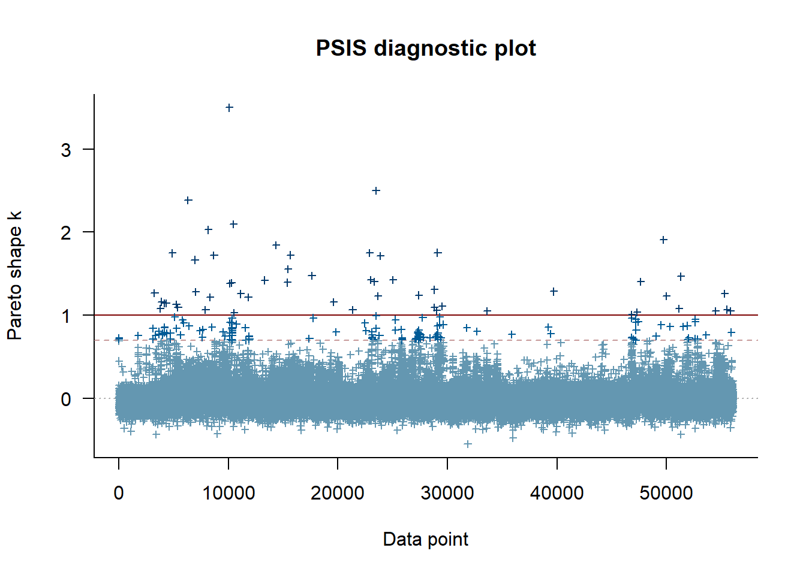
# badpts <- which(my_loo$diagnostics$pareto_k > 0.7)Format observed and predicted values
Mcmcdat <- as_tibble(Mcmcdat)
# subset expected and observed MCMC samples
ppdat_exp <- as.matrix(Mcmcdat[,startsWith(names(Mcmcdat), "stream.mu[")])
ppdat_obs <- as.matrix(Mcmcdat[,startsWith(names(Mcmcdat), "temp[")])Bayesian p-value
sum(ppdat_exp > ppdat_obs) / (dim(ppdat_obs)[1]*dim(ppdat_obs)[2])[1] 0.475474PP-check, global
ppdat_obs_mean <- apply(ppdat_obs, 2, mean)
ppdat_exp_mean <- apply(ppdat_exp, 2, mean)
tibble(obs = ppdat_obs_mean, exp = ppdat_exp_mean) %>%
ggplot(aes(x = obs, y = exp)) +
geom_point(alpha = 0.1) +
# geom_smooth(method = "lm") +
geom_abline(intercept = 0, slope = 1, color = "red") +
theme_bw() + theme(panel.grid = element_blank()) +
xlab("Observed") + ylab("Predicted (mean)")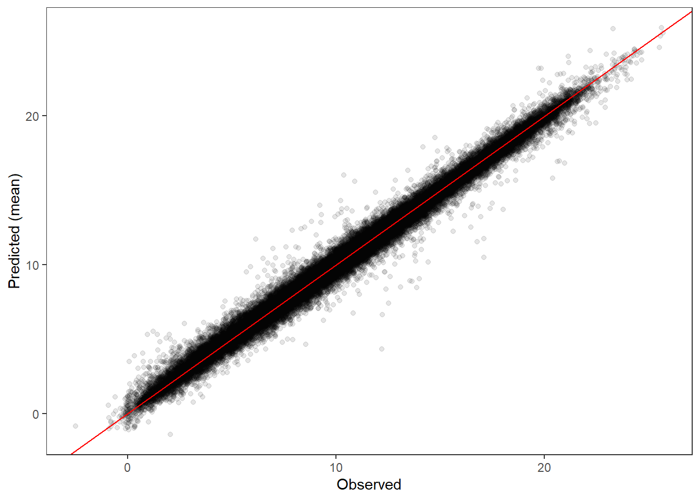
PP-check by river and year
tibble(obs = ppdat_obs_mean, exp = ppdat_exp_mean, site = dat$site_name, year = dat$year) %>%
ggplot(aes(x = obs, y = exp)) +
geom_point(alpha = 0.1) +
# geom_smooth(method = "lm") +
geom_abline(intercept = 0, slope = 1, color = "red") +
theme_bw() + theme(panel.grid = element_blank()) +
xlab("Observed") + ylab("Predicted (mean)") +
facet_grid(year ~ site)RMSE
mean(unlist(ggfit %>% filter(Parameter == "rmse") %>% select(value)))[1] 0.5156623ggs_density(ggfit, "rmse") + theme_bw() + theme(panel.grid = element_blank())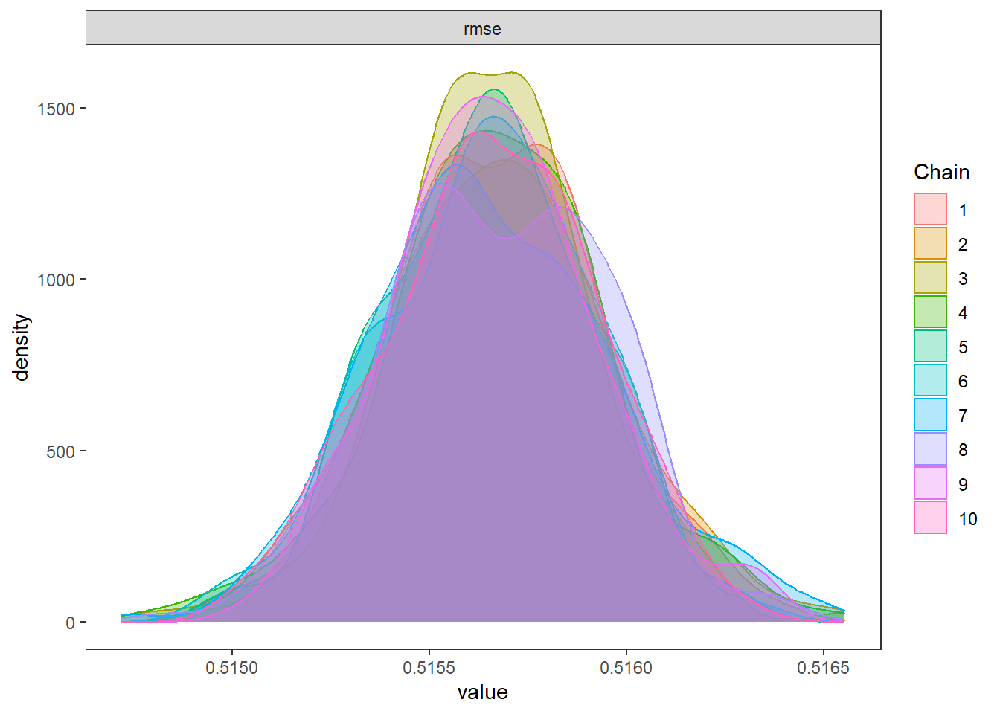
R-squared
mean(unlist(ggfit %>% filter(Parameter == "R2") %>% select(value)))[1] 0.9885025ggs_density(ggfit, "R2") + theme_bw() + theme(panel.grid = element_blank())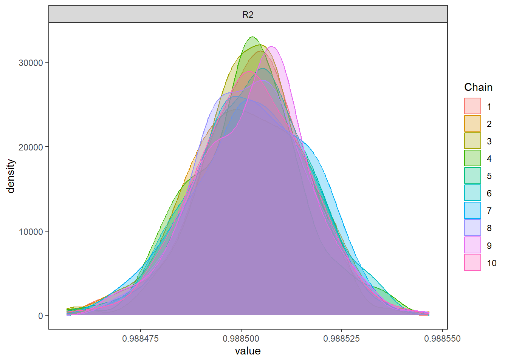
Histogram of residuals
ggplot() +
geom_histogram(aes(x = c(ppdat_obs_mean - ppdat_exp_mean)), color = "black", fill = "grey") +
xlab("Residuals") + theme_bw() + theme(panel.grid = element_blank()) +
geom_vline(xintercept = 0, color = "red") + xlim(-4,4)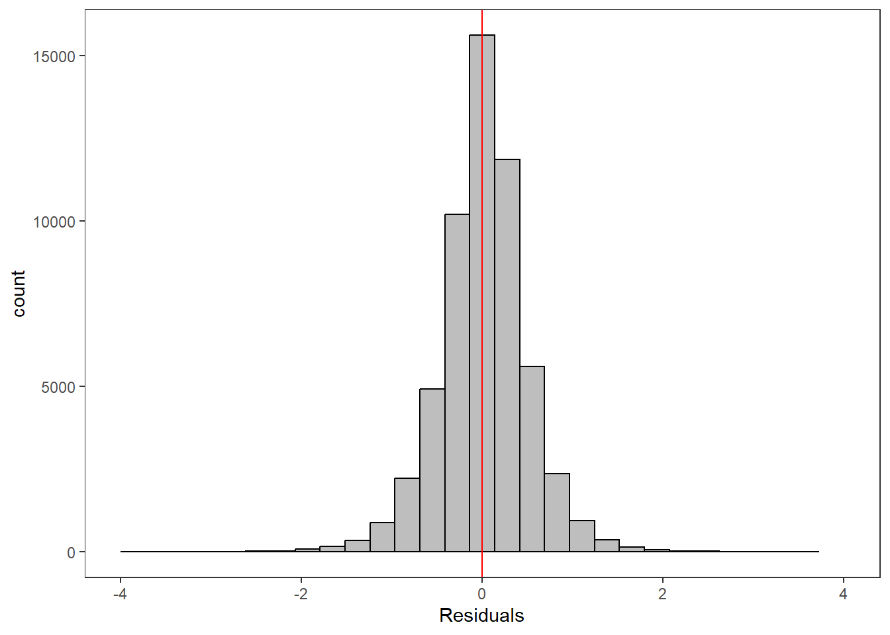
Residuals by time: are we missing something important? Like some time dependent variable (e.g., water source to streamflow).
tibble(site_name = dat$site_name, yday = dat$yday, resid = c(ppdat_obs_mean - ppdat_exp_mean)) %>%
ggplot(aes(x = yday, y = resid)) +
geom_point(alpha = 0.1) +
geom_hline(yintercept = c(0), color = "red") +
geom_smooth(se = FALSE, linewidth = 1.5) +
theme_bw() + #theme(panel.grid = element_blank()) +
xlab("Day of year") + ylab("Residual") +
#facet_wrap(~site_name) +
coord_cartesian(ylim = c(-3,3))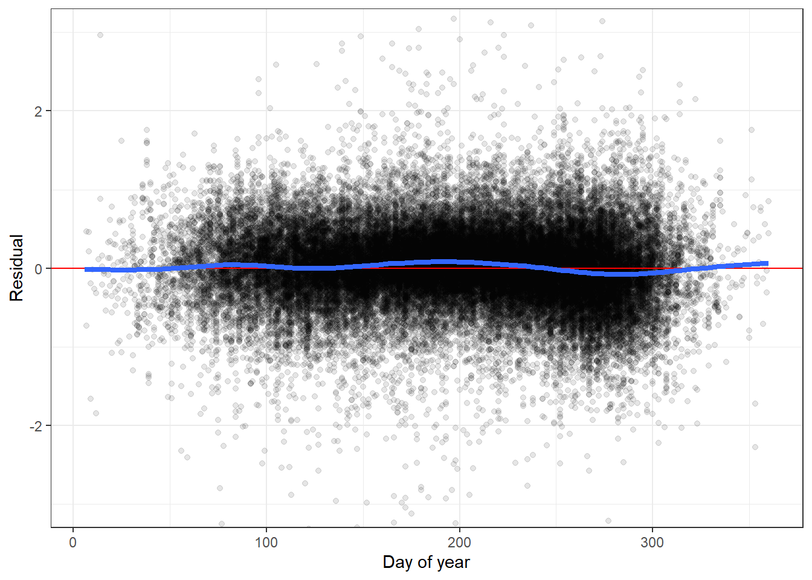
# myparams <- unique(ggfit$Parameter)
mybasins <- c(dat %>% group_by(site_name) %>% summarize(basin = unique(basin)) %>% arrange(basin) %>% ungroup() %>% pull(basin))
mysites <- c(dat %>% group_by(site_name) %>% summarize(site_code = unique(site_code)) %>% arrange(site_code) %>% ungroup() %>% pull(site_name))ggfit %>%
filter(Parameter %in% paste("B.site[", c(1:jags.data$nsites), ",5]", sep = "")) %>%
mutate(Parameter = factor(Parameter, levels = paste("B.site[", c(1:jags.data$nsites), ",5]", sep = ""))) %>%
ggs_caterpillar(sort = FALSE) +
aes(color = mybasins) +
scale_color_brewer(palette = "Dark2") +
scale_y_discrete(labels = rev(mysites), limits = rev) +
xlab("Air temp lag 1") +
theme_bw()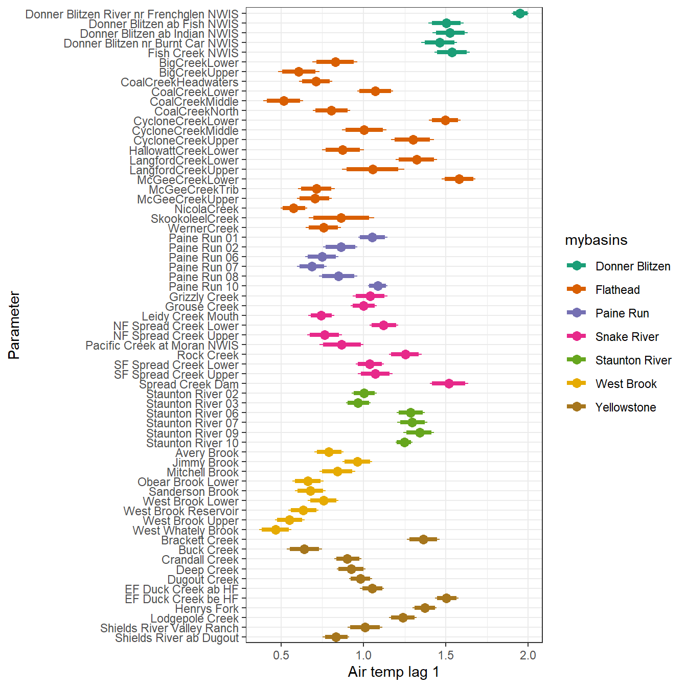
ggfit %>%
filter(Parameter %in% paste("B.site[", c(1:jags.data$nsites), ",6]", sep = "")) %>%
mutate(Parameter = factor(Parameter, levels = paste("B.site[", c(1:jags.data$nsites), ",6]", sep = ""))) %>%
ggs_caterpillar(sort = FALSE) +
aes(color = mybasins) +
scale_color_brewer(palette = "Dark2") +
scale_y_discrete(labels = rev(mysites), limits = rev) +
xlab("Air temp lag 2") +
theme_bw()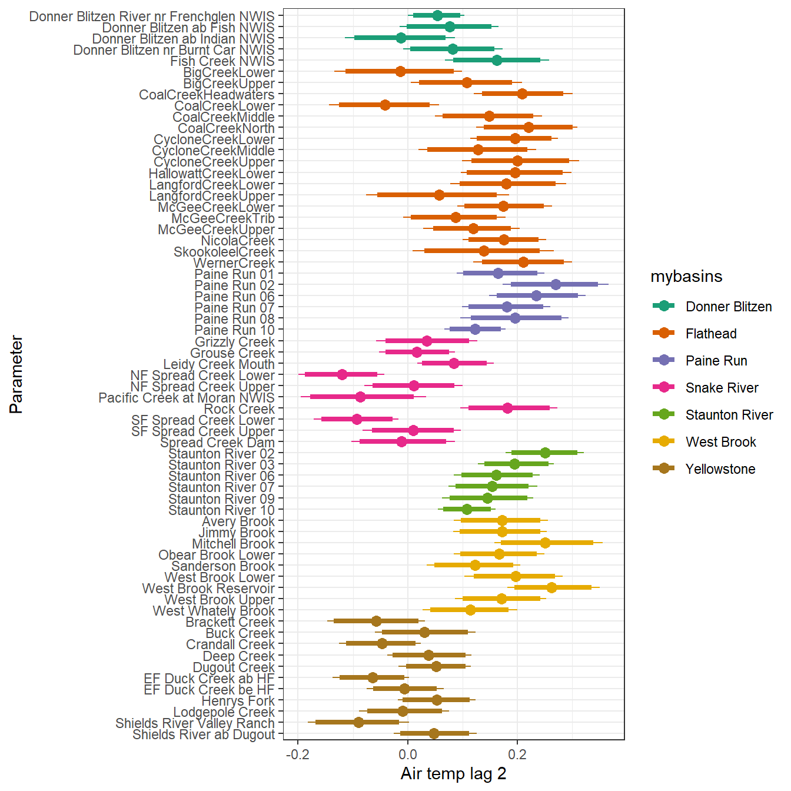
tibble(site_name = mysites,
lag1_mean = ggfit %>%
filter(Parameter %in% paste("B.site[", c(1:jags.data$nsites), ",5]", sep = "")) %>%
mutate(Parameter = factor(Parameter, levels = paste("B.site[", c(1:jags.data$nsites), ",5]", sep = ""))) %>%
group_by(Parameter) %>% summarize(lag1_mean = mean(value)) %>% ungroup() %>% pull(lag1_mean),
lag2_mean = ggfit %>%
filter(Parameter %in% paste("B.site[", c(1:jags.data$nsites), ",6]", sep = "")) %>%
mutate(Parameter = factor(Parameter, levels = paste("B.site[", c(1:jags.data$nsites), ",6]", sep = ""))) %>%
group_by(Parameter) %>% summarize(lag2_mean = mean(value)) %>% ungroup() %>% pull(lag2_mean),
basin = mybasins) %>%
ggplot(aes(x = lag1_mean, y = lag2_mean, color = basin)) + geom_point() + theme_bw() +
scale_color_brewer(palette = "Dark2")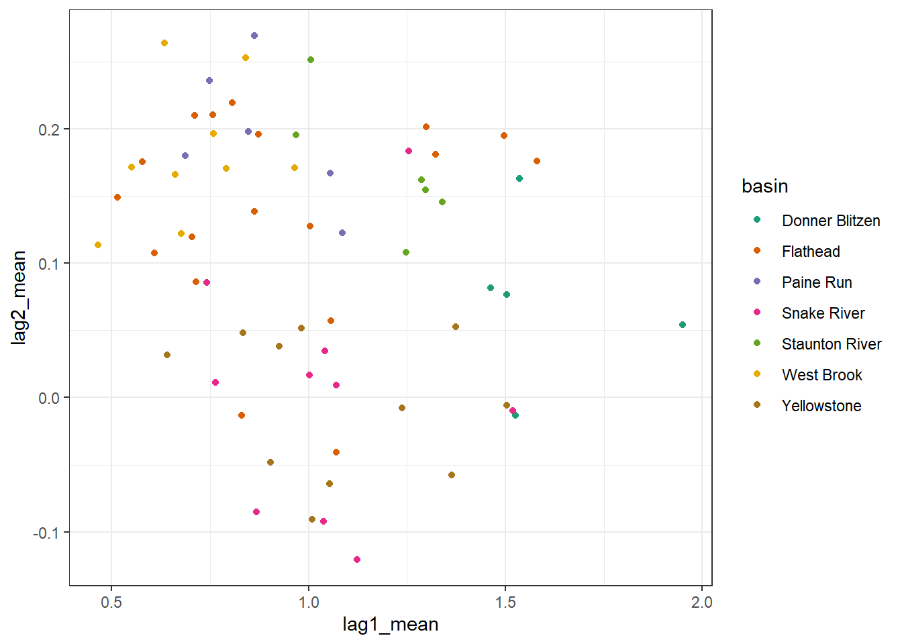
ggfit %>%
filter(Parameter %in% paste("B.site[", c(1:jags.data$nsites), ",1]", sep = "")) %>%
mutate(Parameter = factor(Parameter, levels = paste("B.site[", c(1:jags.data$nsites), ",1]", sep = ""))) %>%
ggs_caterpillar(sort = FALSE) +
aes(color = mybasins) +
scale_color_brewer(palette = "Dark2") +
scale_y_discrete(labels = rev(mysites), limits = rev) +
xlab("Intercepts") +
theme_bw()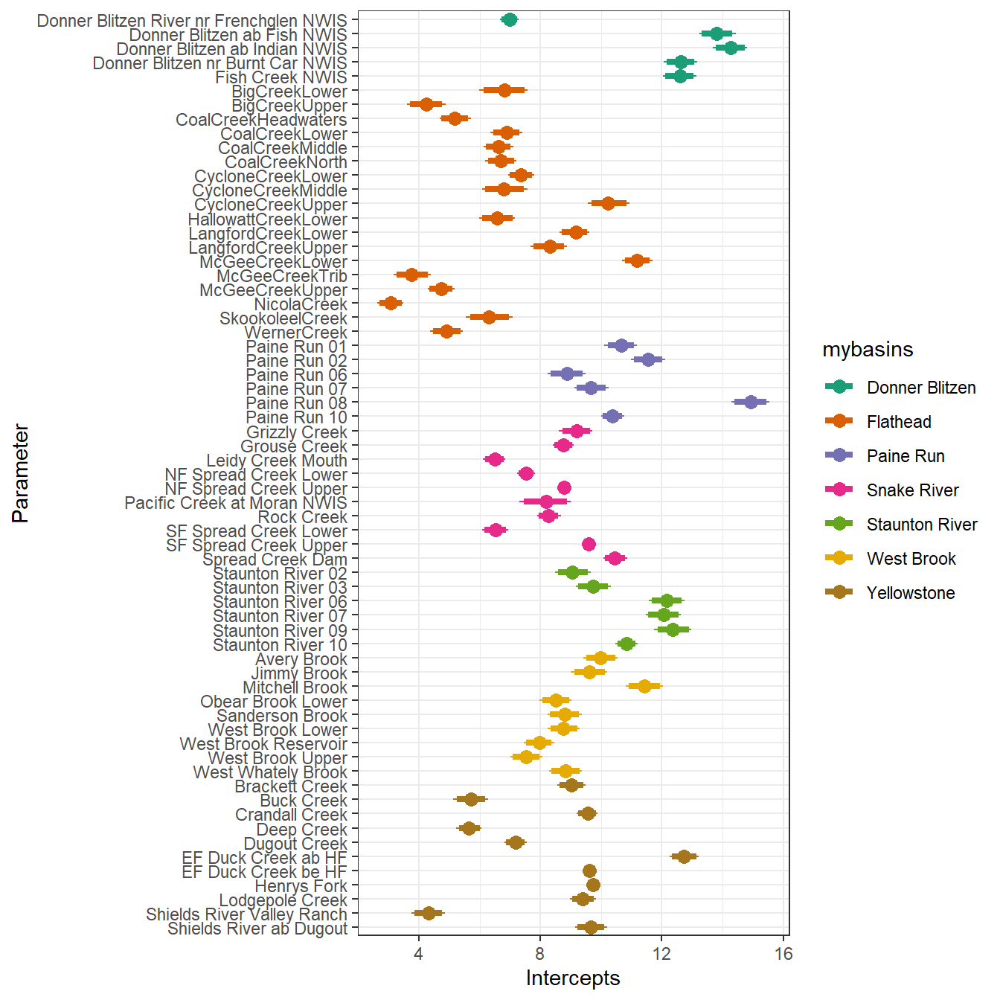
ggfit %>%
filter(Parameter %in% paste("B.site[", c(1:jags.data$nsites), ",2]", sep = "")) %>%
mutate(Parameter = factor(Parameter, levels = paste("B.site[", c(1:jags.data$nsites), ",2]", sep = ""))) %>%
ggs_caterpillar(sort = FALSE) +
aes(color = mybasins) +
scale_color_brewer(palette = "Dark2") +
scale_y_discrete(labels = rev(mysites), limits = rev) +
xlab("Slopes, temperature effect") +
theme_bw()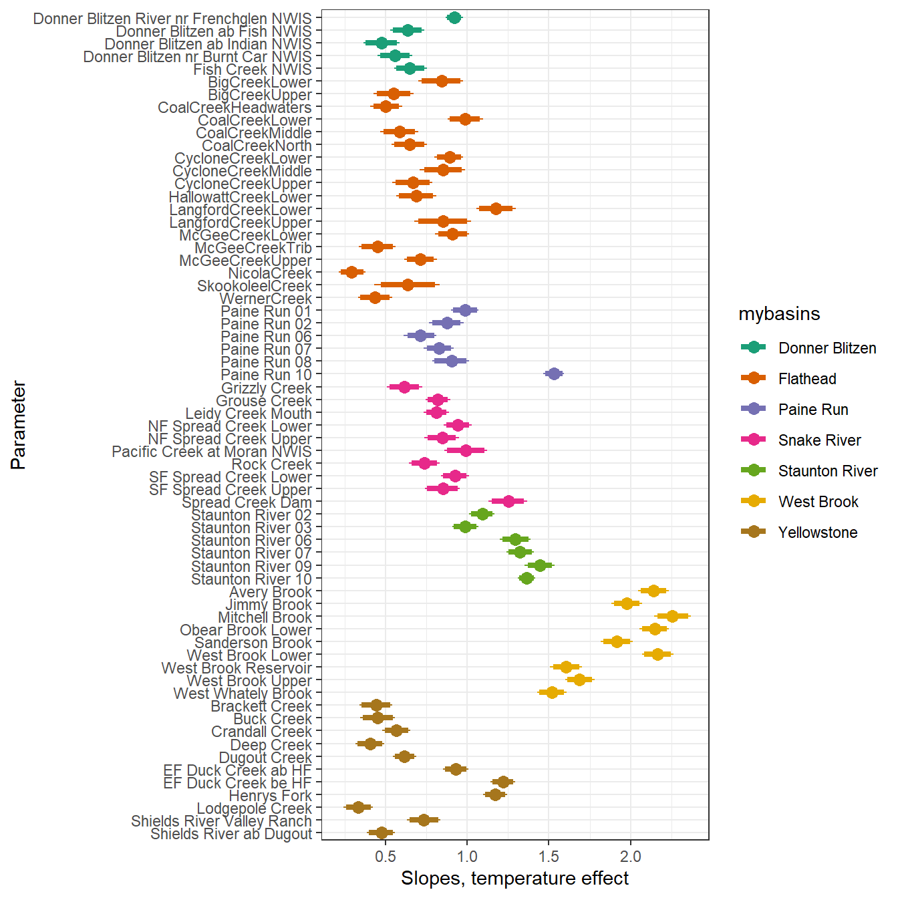
ggfit %>%
filter(Parameter %in% paste("B.site[", c(1:jags.data$nsites), ",3]", sep = "")) %>%
mutate(Parameter = factor(Parameter, levels = paste("B.site[", c(1:jags.data$nsites), ",3]", sep = ""))) %>%
ggs_caterpillar(sort = FALSE) +
aes(color = mybasins) +
scale_color_brewer(palette = "Dark2") +
scale_y_discrete(labels = rev(mysites), limits = rev) +
xlab("Slopes, flow effect") +
theme_bw() + geom_vline(xintercept = 0, linetype = "dashed")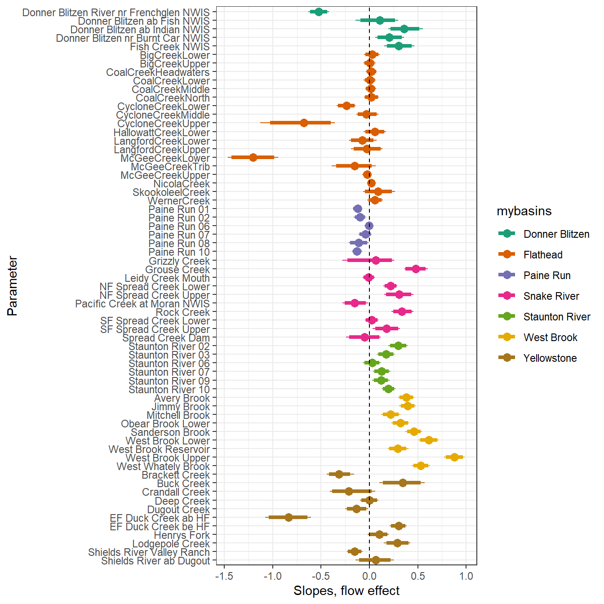
ggfit %>%
filter(Parameter %in% paste("B.site[", c(1:jags.data$nsites), ",4]", sep = "")) %>%
mutate(Parameter = factor(Parameter, levels = paste("B.site[", c(1:jags.data$nsites), ",4]", sep = ""))) %>%
ggs_caterpillar(sort = FALSE) +
aes(color = mybasins) +
scale_color_brewer(palette = "Dark2") +
scale_y_discrete(labels = rev(mysites), limits = rev) +
xlab("Slopes, temp-flow interaction") +
theme_bw() + geom_vline(xintercept = 0, linetype = "dashed")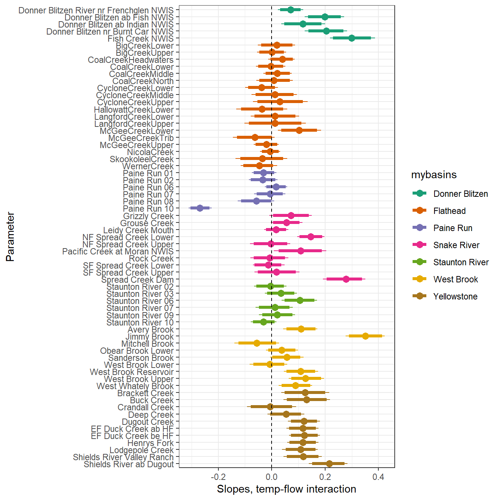
ggs_caterpillar(ggfit %>% filter(Parameter %in% paste("ar1[", c(1:jags.data$nsites), "]", sep = "")) %>%
mutate(Parameter = factor(Parameter, levels = paste("ar1[", c(1:jags.data$nsites), "]", sep = ""))),
sort = FALSE) + scale_y_discrete(labels = rev(mysites), limits = rev) + theme_bw() + aes(color = mybasins) + xlab("Autoregressive parameter") +
scale_color_brewer(palette = "Dark2")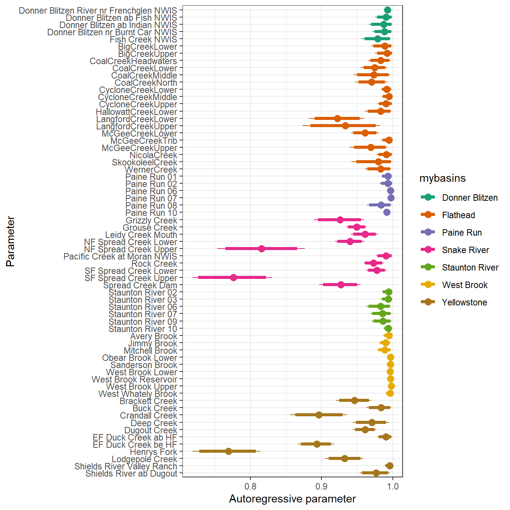
mybasin_names <- c(dat %>% group_by(basin_code) %>% summarize(basin = unique(basin)) %>% arrange(basin_code) %>% ungroup() %>% pull(basin))View global effects
ggfit %>%
filter(Parameter %in% paste("mu.alpha.1[", c(1:6), "]", sep = "")) %>%
mutate(Parameter = factor(Parameter, levels = paste("mu.alpha.1[", c(1:6), "]", sep = ""))) %>%
ggs_caterpillar(sort = FALSE) +
scale_y_discrete(labels = rev(c("Intercept", "Air temp", "Flow", "Air temp x Flow", "Air temp, lag 1", "Air temp, lag 2")), limits = rev) +
xlab("Effect of Elevation") +
theme_bw() + theme(legend.position = "none") +
geom_vline(xintercept = 0, linetype = "dashed")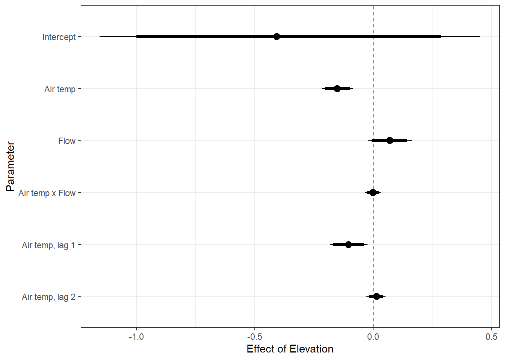
ggfit %>%
filter(Parameter %in% c("mu.alpha.1[1]", paste("alpha.1[", c(1:jags.data$nbasins), ",1]", sep = ""))) %>%
mutate(Parameter = factor(Parameter, levels = c("mu.alpha.1[1]", paste("alpha.1[", c(1:jags.data$nbasins), ",1]", sep = "")))) %>%
ggs_caterpillar(sort = FALSE) +
scale_y_discrete(labels = rev(c("Global", mybasin_names)), limits = rev) +
xlab("Effect of Elevation on Intercept") +
theme_bw() + theme(legend.position = "none")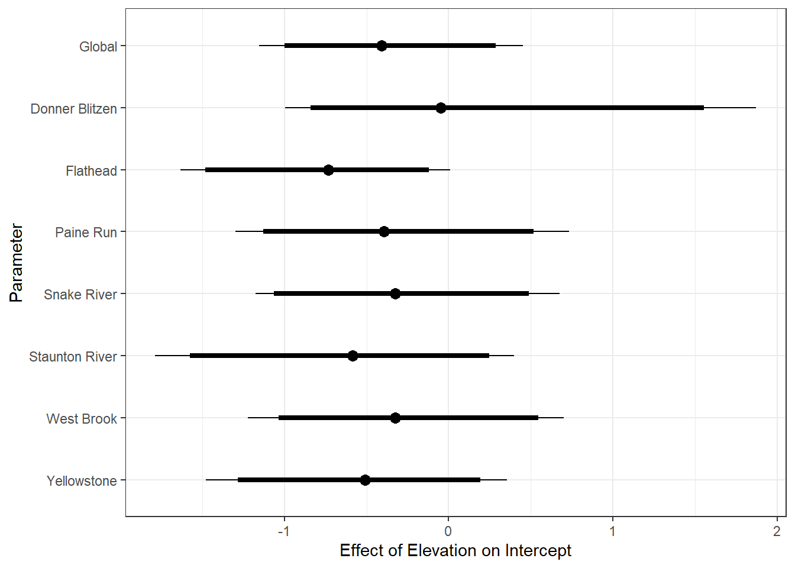
ggfit %>%
filter(Parameter %in% c("mu.alpha.1[2]", paste("alpha.1[", c(1:jags.data$nbasins), ",2]", sep = ""))) %>%
mutate(Parameter = factor(Parameter, levels = c("mu.alpha.1[2]", paste("alpha.1[", c(1:jags.data$nbasins), ",2]", sep = "")))) %>%
ggs_caterpillar(sort = FALSE) +
scale_y_discrete(labels = rev(c("Global", mybasin_names)), limits = rev) +
xlab("Effect of Elevation on Air Temp. Effect") +
theme_bw() + theme(legend.position = "none")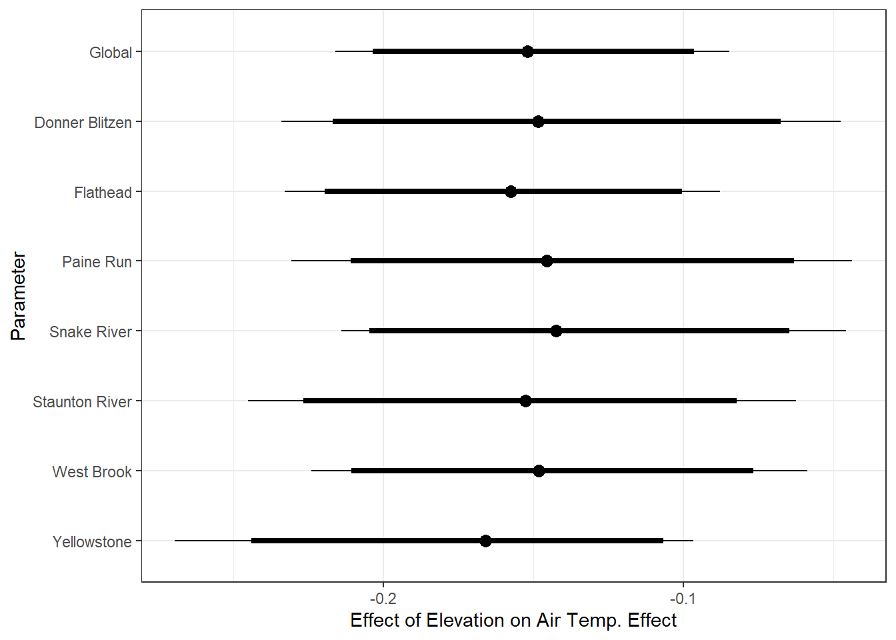
ggfit %>%
filter(Parameter %in% c("mu.alpha.1[3]", paste("alpha.1[", c(1:jags.data$nbasins), ",3]", sep = ""))) %>%
mutate(Parameter = factor(Parameter, levels = c("mu.alpha.1[3]", paste("alpha.1[", c(1:jags.data$nbasins), ",3]", sep = "")))) %>%
ggs_caterpillar(sort = FALSE) +
scale_y_discrete(labels = rev(c("Global", mybasin_names)), limits = rev) +
xlab("Effect of Elevation on Flow Effect") +
theme_bw() + theme(legend.position = "none")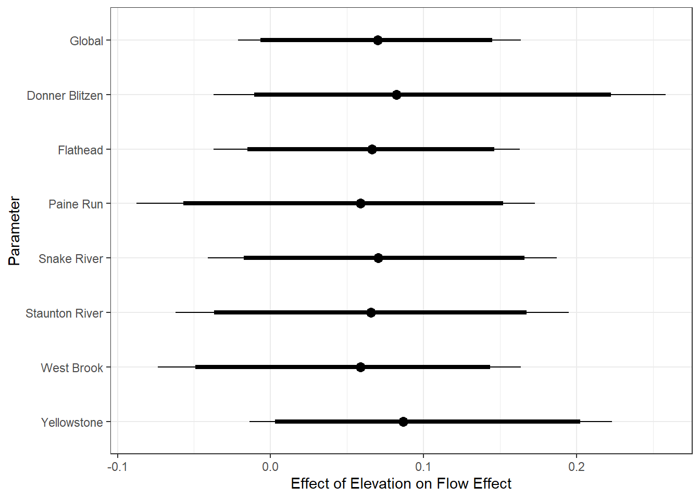
ggfit %>%
filter(Parameter %in% c("mu.alpha.1[4]", paste("alpha.1[", c(1:jags.data$nbasins), ",4]", sep = ""))) %>%
mutate(Parameter = factor(Parameter, levels = c("mu.alpha.1[4]", paste("alpha.1[", c(1:jags.data$nbasins), ",4]", sep = "")))) %>%
ggs_caterpillar(sort = FALSE) +
scale_y_discrete(labels = rev(c("Global", mybasin_names)), limits = rev) +
xlab("Effect of Elevation on Temp-Flow Interaction") +
theme_bw() + theme(legend.position = "none")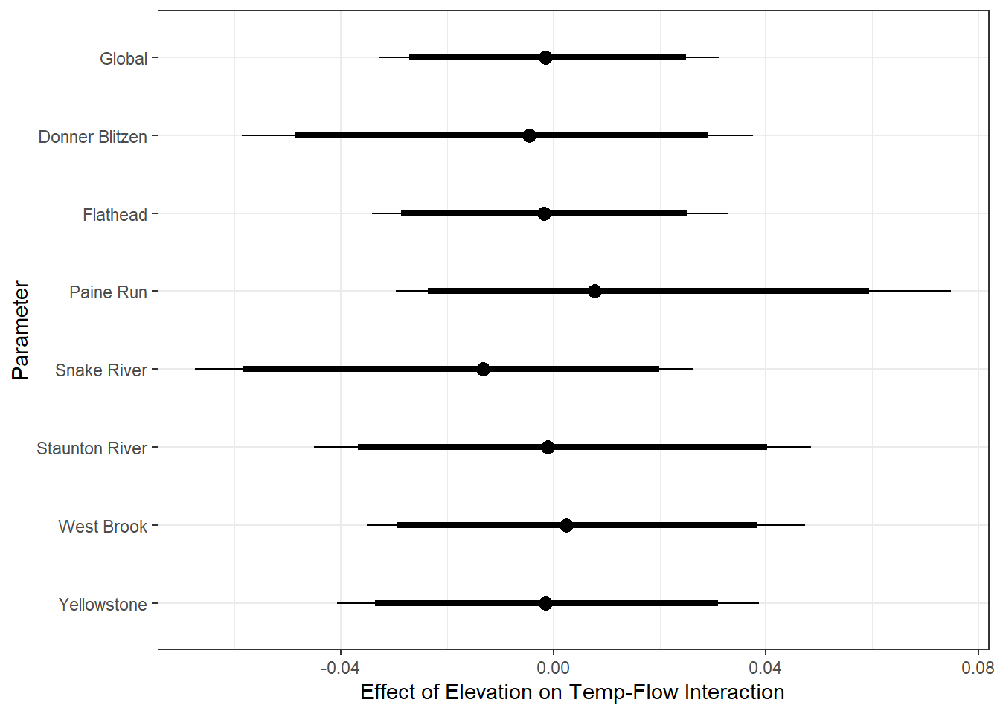
ggfit %>%
filter(Parameter %in% c("mu.alpha.1[5]", paste("alpha.1[", c(1:jags.data$nbasins), ",5]", sep = ""))) %>%
mutate(Parameter = factor(Parameter, levels = c("mu.alpha.1[5]", paste("alpha.1[", c(1:jags.data$nbasins), ",5]", sep = "")))) %>%
ggs_caterpillar(sort = FALSE) +
scale_y_discrete(labels = rev(c("Global", mybasin_names)), limits = rev) +
xlab("Effect of Elevation on Air Temp Lag 1 Effect") +
theme_bw() + theme(legend.position = "none")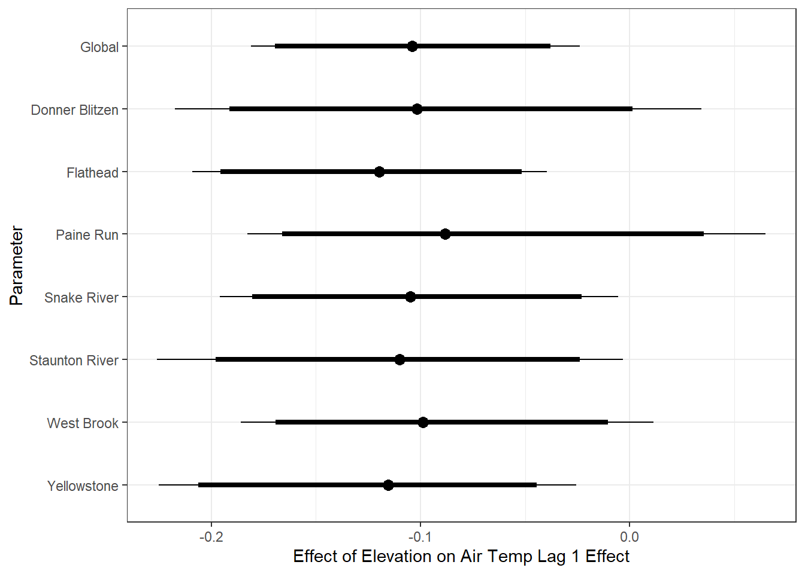
ggfit %>%
filter(Parameter %in% c("mu.alpha.1[6]", paste("alpha.1[", c(1:jags.data$nbasins), ",6]", sep = ""))) %>%
mutate(Parameter = factor(Parameter, levels = c("mu.alpha.1[6]", paste("alpha.1[", c(1:jags.data$nbasins), ",6]", sep = "")))) %>%
ggs_caterpillar(sort = FALSE) +
scale_y_discrete(labels = rev(c("Global", mybasin_names)), limits = rev) +
xlab("Effect of Elevation on Air Temp Lag 2 Effect") +
theme_bw() + theme(legend.position = "none")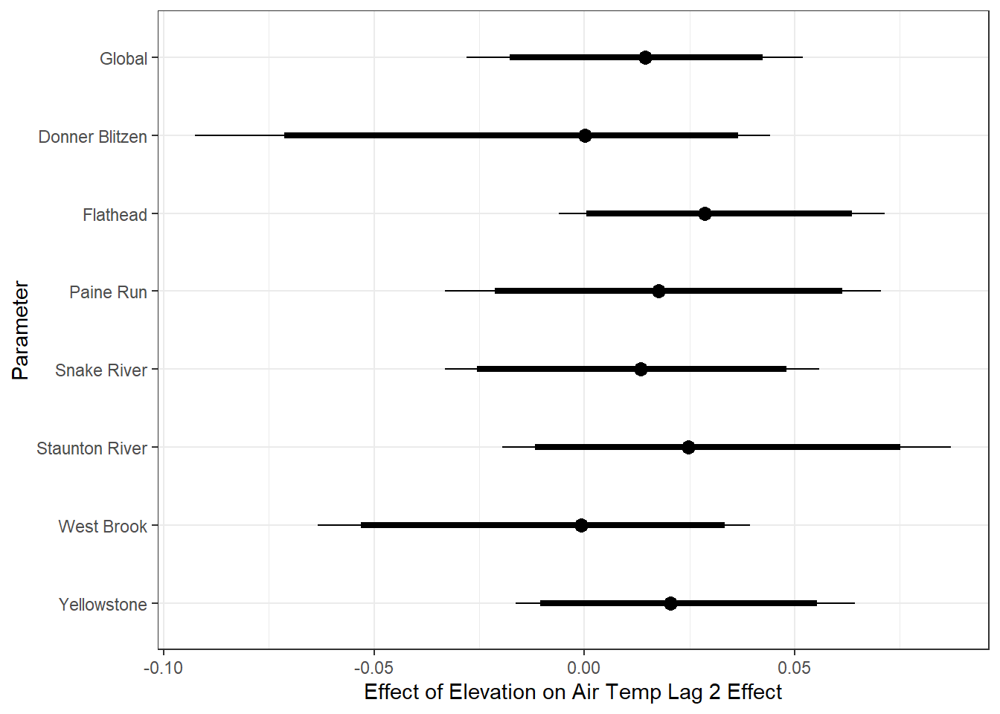
Effect of elevation on air temperature effect
mycols <- brewer.pal(7, name = "Dark2")
# get site level temperature effects
mytib <- tibble(site_name = mysites,
basin = mybasins,
basin_code = jags.data$basin,
eff_mean = param.summary[paste("B.site[", c(1:jags.data$nsites), ",2]", sep = ""),1],
eff_low = param.summary[paste("B.site[", c(1:jags.data$nsites), ",2]", sep = ""),3],
eff_high = param.summary[paste("B.site[", c(1:jags.data$nsites), ",2]", sep = ""),7],
z_elev = data.random.covs$z_elev_ft)
mytib %>% ggplot() + geom_point(aes(x = z_elev, y = eff_mean, color = basin)) + scale_color_brewer(palette = "Dark2")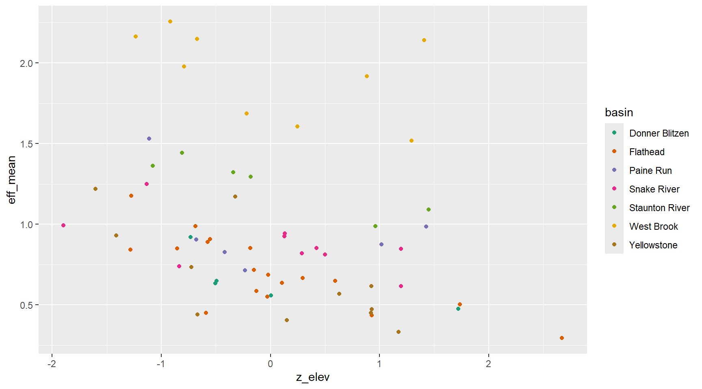
nsims <- 100
# create plotting function
regrplot <- function (i) {
mytib_sub <- mytib %>% filter(basin_code == i)
xseq <- seq(from = min(mytib_sub$z_elev), to = max(mytib_sub$z_elev), length.out = nsims)
preds <- matrix(data = NA, nrow = dim(Mcmcdat)[1], ncol = nsims)
for (j in 1:dim(Mcmcdat)[1]) {
preds[j,] <- unlist(Mcmcdat[j,paste("alpha.0[", i,",2]", sep = "")]) + unlist(Mcmcdat[j,paste("alpha.1[", i,",2]", sep = "")])*xseq
}
ymean <- apply(preds, 2, mean)
ylow <- apply(preds, 2, quantile, probs = 0.025)
yhigh <- apply(preds, 2, quantile, probs = 0.975)
return(ggplot() +
geom_ribbon(aes(x = xseq, ymin = ylow, ymax = yhigh), fill = mycols[i], alpha = 0.3) +
geom_line(aes(x = xseq, y = ymean), color = mycols[i], linewidth = 1.5, lineend = "round") +
geom_errorbar(aes(x = mytib_sub$z_elev, ymin = mytib_sub$eff_low, ymax = mytib_sub$eff_high), width = 0.1) +
geom_point(aes(x = mytib_sub$z_elev, y = mytib_sub$eff_mean), size = 2, shape = 21, fill = mycols[i]) +
theme_classic() +
xlab("Elevation (std.)") + ylab("Temperature effect") + ggtitle(mybasin_names[i]))
}
# global density plot
p1 <- ggfit %>% filter(Parameter == "mu.alpha.1[2]") %>%
ggplot() +
geom_density(aes(value), fill="gray") +
labs(title = "Global", x = "Elevation effect", y = "Density")+
theme_classic()
# combined plot
egg::ggarrange(p1,
regrplot(1) + theme(axis.title.x = element_blank()),
regrplot(2) + theme(axis.title.x = element_blank(), axis.title.y = element_blank()),
regrplot(3) + theme(axis.title.x = element_blank(), axis.title.y = element_blank()),
regrplot(4),
regrplot(5) + theme(axis.title.y = element_blank()),
regrplot(6) + theme(axis.title.y = element_blank()),
regrplot(7) + theme(axis.title.y = element_blank()),
nrow = 2, ncol = 4)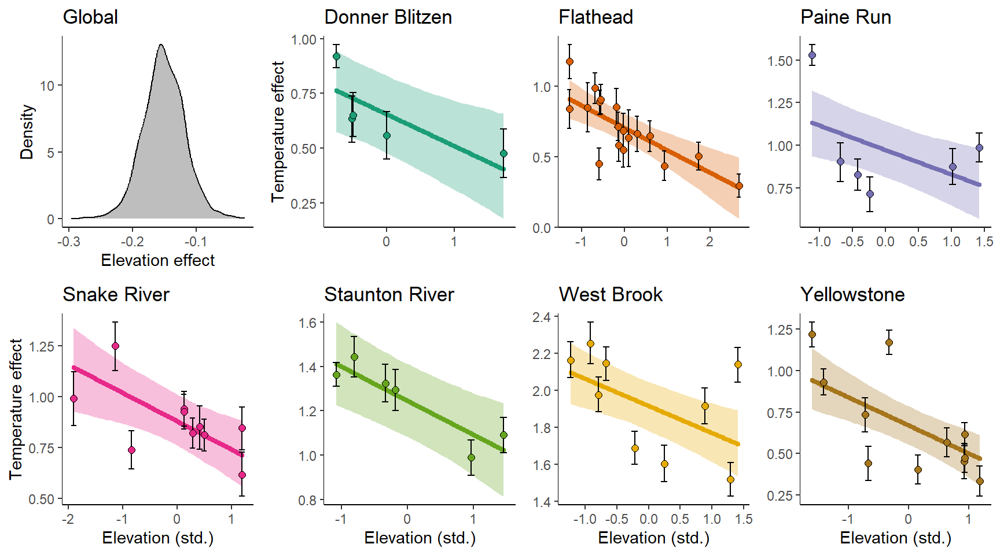
Effect of elevation on flow effect
mycols <- brewer.pal(7, name = "Dark2")
# get site level temperature effects
mytib <- tibble(site_name = mysites,
basin = mybasins,
basin_code = jags.data$basin,
eff_mean = param.summary[paste("B.site[", c(1:jags.data$nsites), ",3]", sep = ""),1],
eff_low = param.summary[paste("B.site[", c(1:jags.data$nsites), ",3]", sep = ""),3],
eff_high = param.summary[paste("B.site[", c(1:jags.data$nsites), ",3]", sep = ""),7],
z_elev = data.random.covs$z_elev_ft)
mytib %>% ggplot() + geom_point(aes(x = z_elev, y = eff_mean, color = basin)) + scale_color_brewer(palette = "Dark2")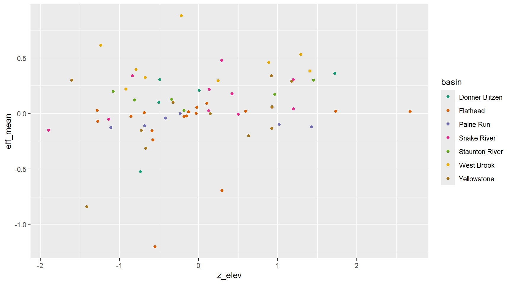
nsims <- 100
# create plotting function
regrplot <- function (i) {
mytib_sub <- mytib %>% filter(basin_code == i)
xseq <- seq(from = min(mytib_sub$z_elev), to = max(mytib_sub$z_elev), length.out = nsims)
preds <- matrix(data = NA, nrow = dim(Mcmcdat)[1], ncol = nsims)
for (j in 1:dim(Mcmcdat)[1]) {
preds[j,] <- unlist(Mcmcdat[j,paste("alpha.0[", i,",3]", sep = "")]) + unlist(Mcmcdat[j,paste("alpha.1[", i,",3]", sep = "")])*xseq
}
ymean <- apply(preds, 2, mean)
ylow <- apply(preds, 2, quantile, probs = 0.025)
yhigh <- apply(preds, 2, quantile, probs = 0.975)
return(ggplot() +
geom_ribbon(aes(x = xseq, ymin = ylow, ymax = yhigh), fill = mycols[i], alpha = 0.3) +
geom_line(aes(x = xseq, y = ymean), color = mycols[i], linewidth = 1.5, lineend = "round") +
geom_errorbar(aes(x = mytib_sub$z_elev, ymin = mytib_sub$eff_low, ymax = mytib_sub$eff_high), width = 0.1) +
geom_point(aes(x = mytib_sub$z_elev, y = mytib_sub$eff_mean), size = 2, shape = 21, fill = mycols[i]) +
theme_classic() +
xlab("Elevation (std.)") + ylab("Flow effect") + ggtitle(mybasin_names[i]))
}
# global density plot
p1 <- ggfit %>% filter(Parameter == "mu.alpha.1[3]") %>%
ggplot() +
geom_density(aes(value), fill="gray") +
labs(title = "Global", x = "Elevation effect", y = "Density")+
theme_classic()
# combined plot
egg::ggarrange(p1,
regrplot(1) + theme(axis.title.x = element_blank()),
regrplot(2) + theme(axis.title.x = element_blank(), axis.title.y = element_blank()),
regrplot(3) + theme(axis.title.x = element_blank(), axis.title.y = element_blank()),
regrplot(4),
regrplot(5) + theme(axis.title.y = element_blank()),
regrplot(6) + theme(axis.title.y = element_blank()),
regrplot(7) + theme(axis.title.y = element_blank()),
nrow = 2, ncol = 4)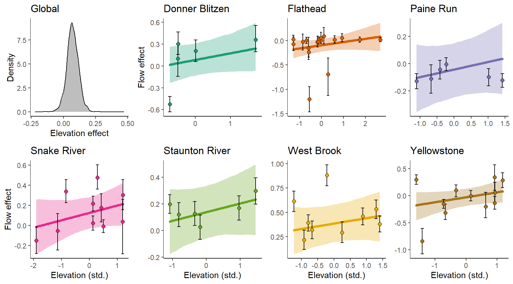